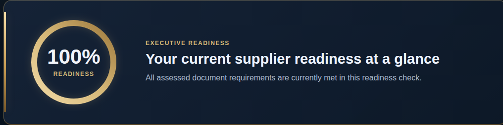

PDF documents
Group supplier documents in one place for review.
One Supplier. Multiple Customers. Different Requirements.
Keep your supplier documents organized, identify missing requirements and know what to do next.
Built with suppliers in Saudi Arabia in mind. The current prototype illustrates one Saudi Aramco supplier-registration scenario.
Guided screen sharing with synthetic PDFs. Please do not send supplier documents by email.

The prototype recommends the next practical action and shows its estimated impact under the configured checks.
Renew GOSI Certificate
Group supplier documents in one place for review.
See which documents are valid, missing, expired or due for review.
See how many configured checks the supplier currently passes.
Review the results and prioritize the next actions.
Our development goal is to reuse one document set across different buyer checks. The current prototype covers one illustrative scenario. Its rules have not been fully verified against official buyer requirements. LioTil is independent and is not affiliated with or endorsed by Saudi Aramco.
We show the upload, the readiness overview and the Executive Report with synthetic documents. Tell us your preferred times and time zone, and we can arrange a session.